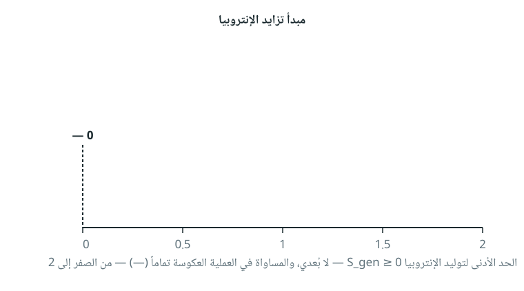

مبدأ تزايد الإنتروبيا
Increase of Entropy Principle
إنتروبيا النظام المعزول لا تنقص؛ وتوليد الإنتروبيا لا يكون سالباً أبداً في أي عملية حقيقية.
مبدأ تزايد الإنتروبيا ينص أن إنتروبيا النظام المعزول لا تنقص، وأن توليد الإنتروبيا لا يكون سالباً أبداً. يعرضه Çengel بموازنة: S_in − S_out + S_gen = ΔS_system، مع S_gen ≥ 0. ويوضح المصدر نفسه تمييزاً عملياً حاسماً: المبدأ لا يعني أن إنتروبيا النظام لا يمكن أن تنقص؛ فتغيّر إنتروبيا النظام قد يكون سالباً أثناء عملية، أما توليد الإنتروبيا فلا يكون سالباً. ويضيف Atkins أن القانون الثاني يقرر أن الإنتروبيا الكلية للكون تزداد في أي عملية تلقائية. والخلط بين تغيّر إنتروبيا النظام وتوليد الإنتروبيا هو أشيع خطأ في تحليل القانون الثاني.
كيف تعمل الظاهرة؟
مبدأ تزايد الإنتروبيا ينص أن إنتروبيا النظام المعزول لا تنقص، وأن توليد الإنتروبيا لا يكون سالباً أبداً. يعرضه Çengel بموازنة: S_in − S_out + S_gen = ΔS_system، مع S_gen ≥ 0. ويوضح المصدر نفسه تمييزاً عملياً حاسماً: المبدأ لا يعني أن إنتروبيا النظام لا يمكن أن تنقص؛ فتغيّر إنتروبيا النظام قد يكون سالباً أثناء عملية، أما توليد الإنتروبيا فلا يكون سالباً.
العلاقة بالأرقام
S_in − S_out + S_gen = ΔS_system مع S_gen ≥ 0، ووحداتها J/K. والمساواة تتحقق في العملية العكوسة تماماً حيث S_gen = 0. ومثال: تجميد الماء في ثلاجة، إنتروبيا الماء تنقص، لكن الثلاجة تطرح حرارة إلى الغرفة فترتفع إنتروبيا الغرفة أكثر، فيزداد المجموع. ويضيف Atkins أن الإنتروبيا الكلية للكون تزداد في أي عملية تلقائية.
مفاهيم متقاربة
مبدأ تزايد الإنتروبيا يختلف عن القانون الثالث: الثالث يثبت قيمة مرجعية عند الصفر المطلق، والأول يحدد اتجاه العمليات. ويختلف عن متراجحة كلاوزيوس التي تربط تغيّر إنتروبيا النظام بالحرارة المتبادلة. ولا يعني أن إنتروبيا كل نظام تنقص أو تزيد بذاتها: إنتروبيا النظام قد تنقص إذا زادت إنتروبيا المحيط أكثر، والمجموع لا ينقص.
حدود التطبيق
المبدأ بصيغته المطلقة يخص نظاماً معزولاً؛ وفي نظام مفتوح تُستخدم الموازنة بحدود الكتلة الداخلة والخارجة. ولا يُستنتج منه أن كل عملية تلقائية تزيد إنتروبيا النظام نفسه، بل مجموع النظام والمحيط. والخلط بين تغيّر إنتروبيا النظام وتوليد الإنتروبيا هو أشيع خطأ في تحليل القانون الثاني.

| الكمية | القيمة | المصدر |
|---|---|---|
| الحد الأدنى لتوليد الإنتروبيا S_gen ≥ 0 — لا بُعدي، والمساواة في العملية العكوسة تماماً | 0 — | [1] |
المصادر
- 1 Thermodynamics: An Engineering Approach, 8th ed. — McGraw-Hill (2015). openlibrary.org/api/books?bibkeys=ISBN:9780073398174&format=json&jscmd=data · اطُّلع عليه 2026-11-21
- 2 Atkins' Physical Chemistry, 11th ed. — Oxford University Press (2018). · اطُّلع عليه 2026-11-21
استشهد بهذا المصطلح
الصيغتان مبنيتان من بيانات الصفحة نفسها: العنوان والتاريخ ورابط النسخة المنشورة.
مبدأ تزايد الإنتروبيا — Increase of Entropy Principle. (2026). ديوان المعرفة — انفراد. https://infiradev.com/diwan/terms/term-entropy-increase.html
@misc{term-entropy-increase2026,
title = {مبدأ تزايد الإنتروبيا},
titleaddon = {Increase of Entropy Principle},
howpublished = {{ديوان المعرفة — انفراد} — مرجع علمي عربي},
year = {2026},
url = {https://infiradev.com/diwan/terms/term-entropy-increase.html},
urldate = {2026-11-25},
note = {مراجعة علمية: فحص التسليم — مراجعة المدير}
}
راجعه: فحص التسليم — مراجعة المدير · 2026-11-25 · آخر تحديث 2026-11-21